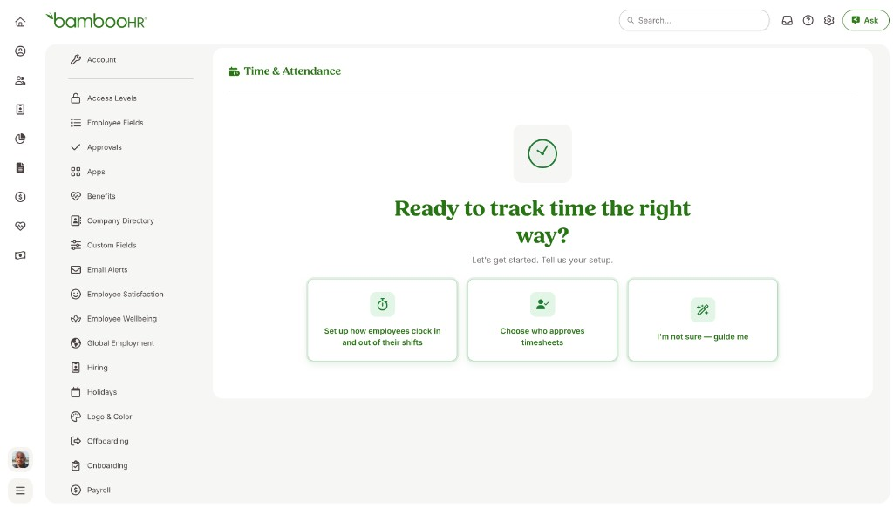
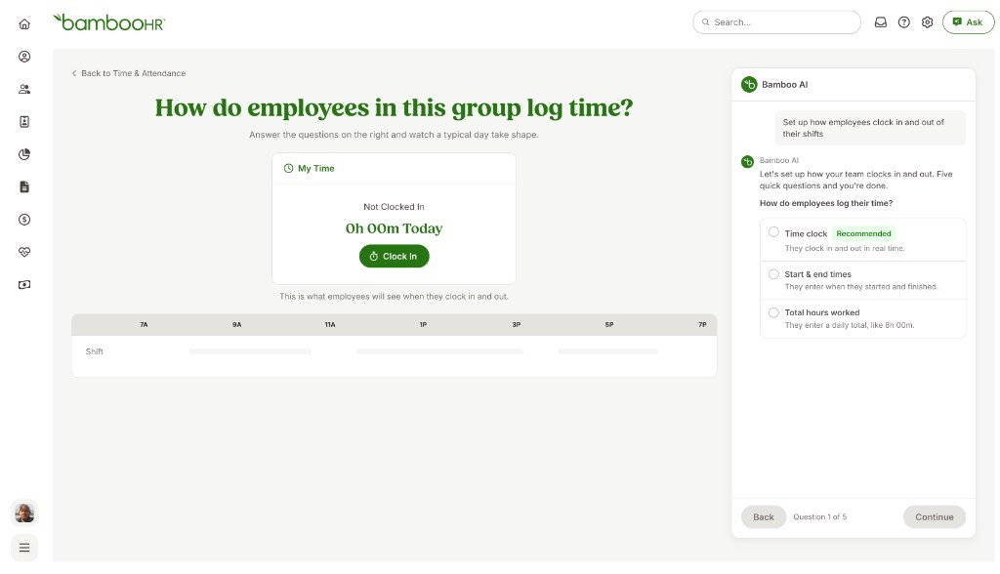
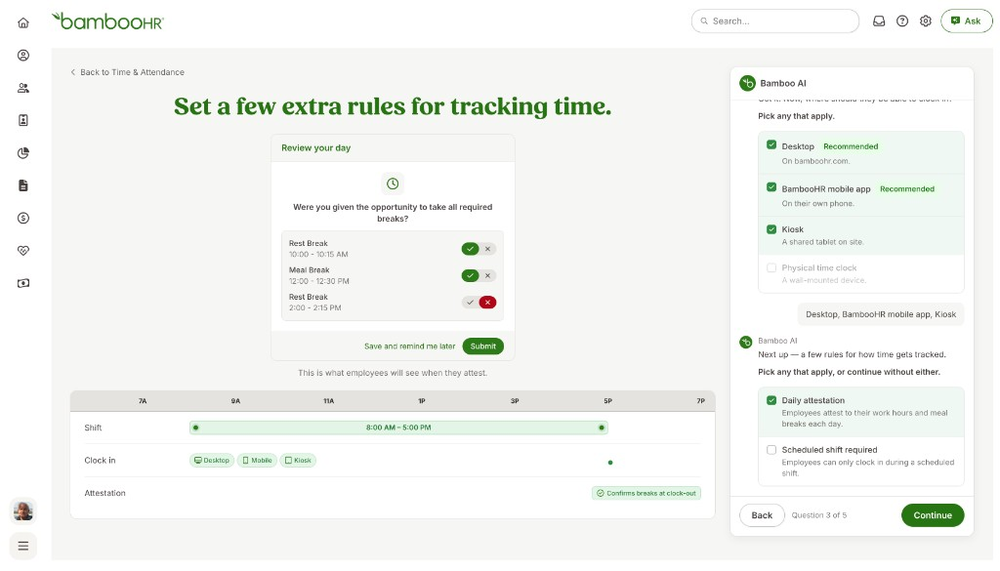
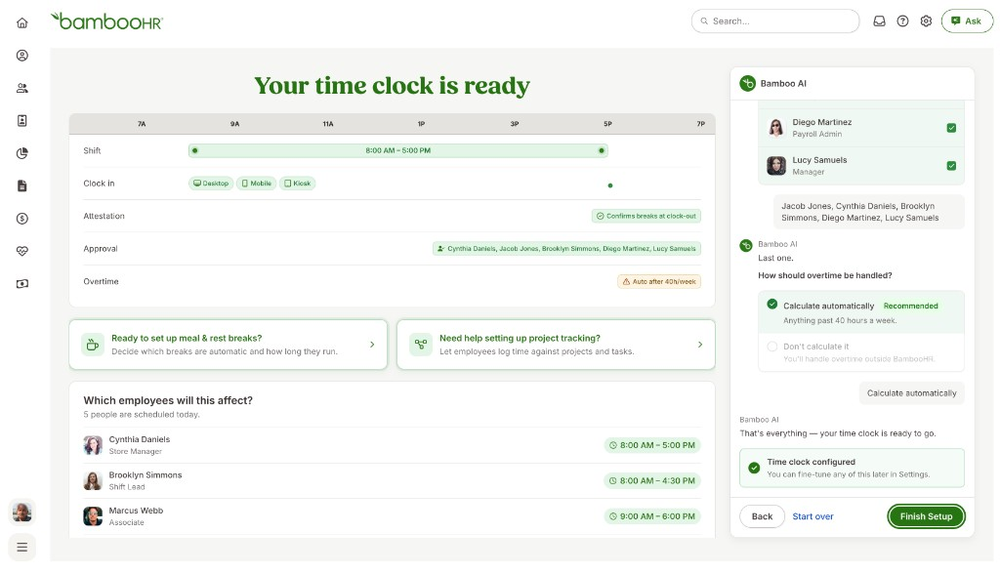
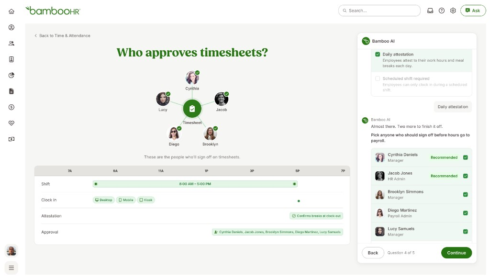

Prototype Gallery





An AI-first onboarding experience that helps HR managers understand and configure time and attendance settings with more confidence.
Users had difficulty navigating the time and attendance settings. As HR managers, they also wanted to see what their employees would see depending on which settings they selected.
Began divergent thinking and prototyping with Claude. Performed user interviews with 8 HR managers and conducted usability tests with 12 customers. Utilized different AI tools to ensure my designs stayed within design system components.
Designed and developed an AI-first time and attendance onboarding experience.




